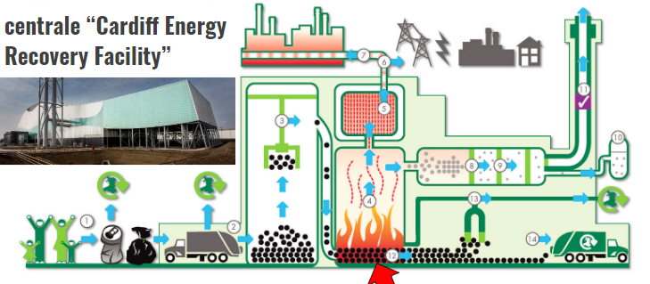

Bienvenue sur le
site web du groupe B !
Usine ERF ( petit résumé ) :
Traite 350 000 tonnes de déchets résiduels (non recyclable) par an.
Il évacue au moins 95% des déchets
résiduels du sud du Pays de Galles des sites d'enfouissement et génère 30 MW d'électricité pour le réseau
national => 50 000 foyers.
